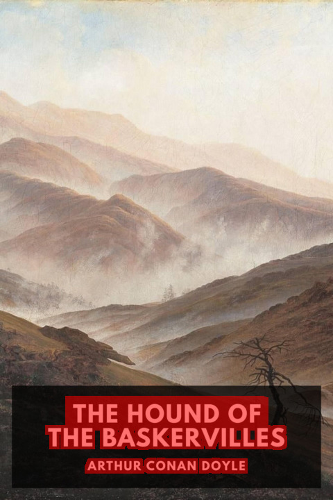
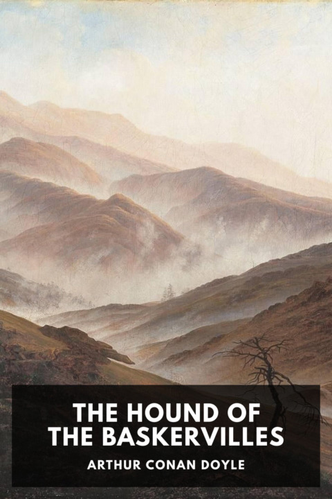
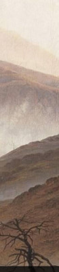
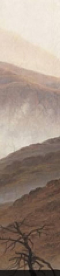
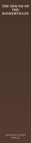
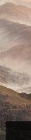

Rust + ONNX Runtime port of the v8 automatic route. Original → automatic mask → fill → 52 × 236 spine → QA, with the Python v8 spine alongside for comparison. No hand-drawn masks, no API key, no hosted service.
Host run on x86-64. Timings are single shared-host runs and fluctuate with load: crop routes measured 2.4–13.8 s (typically 3–6 s), the optional LaMa pass 31–57 s. Peak RSS is stable at ~450–500 MB for crop routes and ~1.0 GB with LaMa. Android cross-compile and model/runtime sizes are documented in the README. The shared study dock is wired by the audit agent; this gallery is self-contained.
The Hound of the Baskervilles
Arthur Conan Doyle
text-free croppassmask 7.9%11.7 sdet 6.3 sno LaMa
Original

Mask

Art (no fill)

Chosen crop

Spine 2×

Fallback

Python v8
zero mask coverage, no residual OCR, structure at spine scale